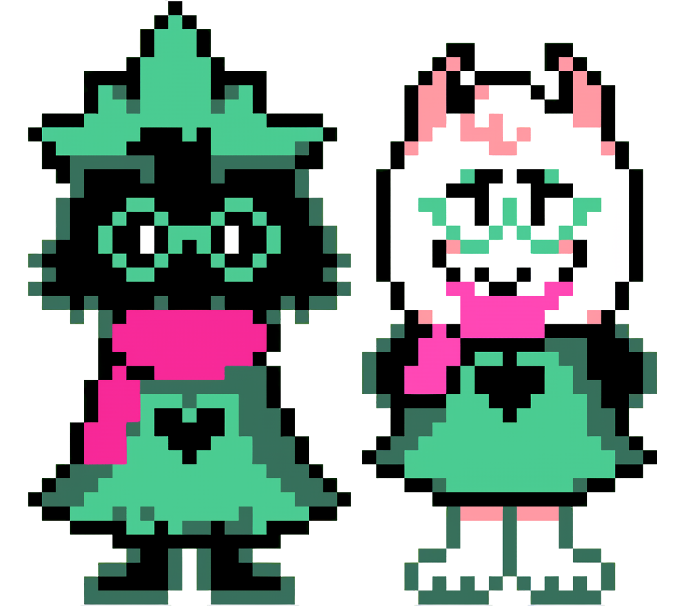

Personagens Principais
Kris
Kris é o protagonista jogável de Deltarune. Uma pessoa quieta e misteriosa, raramente fala e possui um comportamento enigmático. Apesar de parecer comum, há algo estranho por trás de suas ações — especialmente em momentos onde o jogador perde o controle. Teorias dizem que ele está sendo controlado contra sua vontade e tenta pedir ajuda em alguns momentos do jogo, e retirar sua alma é a forma de se libertar, como ele faz no final dos dois capitulos lançados
Susie
Susie é uma estudante rebelde e intimidadora, conhecida por sua força bruta e falta de paciência. No início, parece agressiva e antissocial, mas aos poucos revela um lado protetor e leal, tornando-se uma verdadeira heroína ao lado de Kris e Ralsei.
Ralsei
Ralsei é um Darkner gentil que se autodenomina um Príncipe do Mundo das Trevas. Educado e otimista, ele acredita na importância da amizade e da harmonia entre a luz e a escuridão. Sempre disposto a ajudar, é um dos principais guias do grupo.
Lancer
Lancer é um Darkner travesso e cômico que inicialmente tenta impedir os heróis, mas logo se junta a eles. Com seu jeito infantil e carismático, ele rapidamente conquista todos com suas piadas bobas e seu coração inesperadamente bondoso.
Rei
O Rei é o principal antagonista do Capítulo 1. Autoritário e cruel, tenta dominar o Mundo das Trevas com sua visão distorcida de equilíbrio. Seu comportamento tirânico acaba afastando até mesmo seus aliados — incluindo seu próprio filho, Lancer.
Noelle

Noelle é uma colega de escola de Kris, tímida e gentil. No Capítulo 2, ela tem um papel importante na história e mostra um lado mais vulnerável e complexo. Apesar de parecer frágil, demonstra força emocional em momentos decisivos.
Berdly
Berdly é um estudante que se considera um gênio e rival de Kris. Arrogante e convencido, tenta se destacar a qualquer custo. Com o tempo, no entanto, revela ser mais inseguro do que aparenta, e acaba se envolvendo nos eventos do Dark World.
Rouxls Kaard
Rouxls se autoproclama o “príncipe dos enigmas” e serve ao Rei no Capítulo 1. É um personagem pomposo e exagerado, que adora falar de forma antiquada e enigmática. Seus desafios, apesar de teatrais, raramente são difíceis.
Rainha
A Rainha é a principal antagonista do Capítulo 2. Astuta e carismática, deseja controlar o Cyber World com a ajuda de Noelle. Diferente do Rei, usa manipulação e lógica para atingir seus objetivos, sempre com um humor peculiar e memes robóticos.